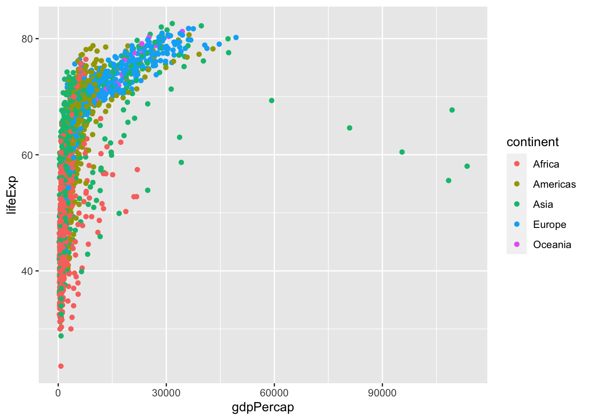
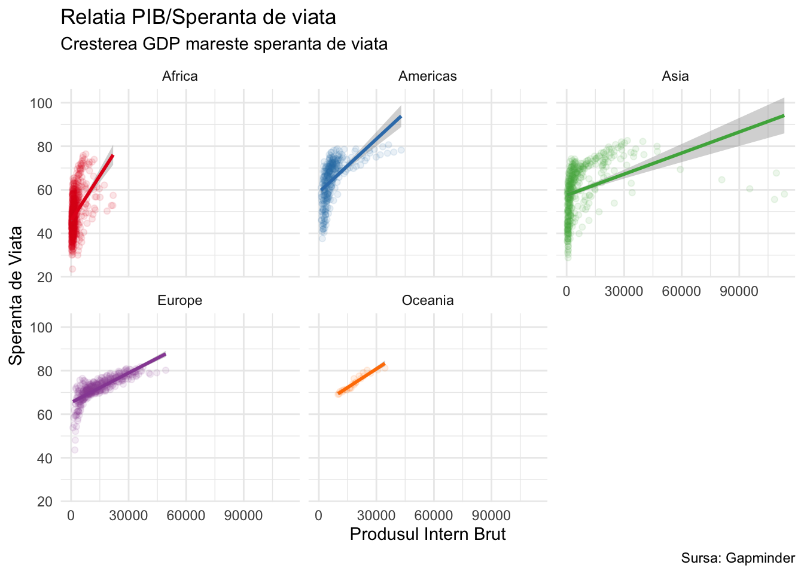

# Căutare:
REF(“the R software” OR “the R project” OR “r-project.org” OR “R development core”)
REF(SPSS)Introducere în R/RStudio
Școala Doctorală - 2022 (Toamnă)
R, câteva cuvinte introductive:
- R este un limbaj de programare și un mediu de prelucrare și analiză statistică a datelor.
- Este, pur și simplu, cel mai bun instrument existent în prezent pentru această sarcină.
- Devenit între timp standard în știintele sociale.
- Este proiectat de la zero pentru a gestiona date, iar acest lucru se vede. Dar este, de asemenea, suficient de flexibil pentru a fi utilizat pentru a crea pagini web interactive (ca această prezentare), rapoarte automate și API-uri.
Câteva cifre - Căutare Scopus (13.09.2022)
Scopus acoperă aproape 36.377 de titluri de la aproximativ 11.678 de edituri, dintre care 34.346 sunt reviste peer-review: științele vieții, științele sociale, științele fizice și științele sănătății.
De ce această adopție în masă?
- Este gratuit, versatil, rapid și modern - pur și simplu, cel mai bun instrument existent în prezent pentru analiza datelor.
- Dispune de o comunitate mare și prietenoasă de utilizatori care ajută la răspunsul la întrebări și la dezvoltarea de noi instrumente R (e.g., Stackoverflow)
- Cu peste 17.000 de pachete suplimentare disponibile, R oferă mai multe funcții pentru analiza datelor decât orice altă alternativă.
- Include instrumente specializate pentru discipline atât de variate precum științele politice, chimia mediului și astronomia, iar noile metode ajung în R cu mult înainte de a ajunge în alte programe.
- R facilitează construirea de analize reproductibile și flowuri de lucru care vă permit să repetați cu ușurință aceeași analiză de mai multe ori.
Este R ușor (de învățat)?

Lawlor et al. (2022):
Regula 1: Pregătiți-vă pentru o curbă de învățare abruptă
Regula 3: Folosiți resurse gratuite
Regula 4: Dezvoltă-ți abilitățile prin proiecte cu presiune redusă
Regula 5: Adoptați bunele practici și fiți consecvenți
Regula 7: Cereți ajutor (și ajutați-i pe alții)
Regula 9: Citește codul altora și împarte-l pe al tău
Cum vom lucra? Adică: Încă nu am instalat nimic pe laptop!
Nu-i bai! Pentru început vom lucra cu rstudio.cloud o soluţie cloud, dar după ziua de azi, mă aștept ca fiecare din voi să aveți propria versiune locală de R şi RStudio.
Pentru asta:
Înainte de a porni la drum avem nevoie de două programe, R și RStudio. Primul în ordinea importanței ar fi R. Pentru a-l descărca, accesați direct pagina ce conține lista de servere de unde este disponibil, la https://cran.r-project.org/mirrors.html
Descărcarea R
Odată ce ați ajuns pe pagină, puteți alege versiuna potrivită sistemului de operare pe care îl folosiți.
Pentru versiunea Windows alegeți linkul Download R for Windows. Următoarea pagină vă oferă diverse opțiuni ale R, dar varianta pe care o doriți este cea base (de bază). A mai rămas doar un pas, și acela ar fi un click pe Download R X.X.X for Windows, unde X.X.X descrie varianta cea mai nouă a R.
Dacă utilizați MacOS, alegeți Download R for (Mac) OS X, și descărcați fișierul R-X.X.X.pkg, unde din nou, X.X.X definește varianta actuală a R.
Warning
De când Apple a lansat propria linie de procesoare ARM (M1 şi viitoarele…) R există acum în două “gusturi”: varianta pentru Mac-urile vechi (pe Intel) şi o variantă R pentru cele noi, de după 2020. Atenţie la pachetul pe care îl descărcaţi.
Instalarea R
Instalarea R în Windows este destul de directă. Executați fișierul de instalre pe care l-ați descărcat, alegeți limba pachetului de instalare (din păcate încă nu avem opțiunea limbii Române), confirmați licența, alegeți adresa locală unde va fi instalat R, și cam atât. Atâta doar că puteți renunța la varianta de 32 de biți dacă aveți un sistem de operare Windows 7 sau mai recent.
Descărcarea RStudio
Programul de bază R pe care tocmai l-ați instalat nu este însă ușor de folosit. Iar dacă tocmai faceți o tranziție dinspre programe cu intefață grafică precum SPSS, lucrurile pot părea chiar dramatice. De aceea partea a doua a drumului nostru implică descărcarea și instalarea RStudio.
RStudio este un așa numit mediu integrat de dezvoltare (IDE) pentru R. Ce este un IDE contează mai puțin, ce este important însă este că RStudio oferă o interfață grafică solidă și ușor de utilizat pentru R, precum și funcționalitate suplimentară: management al suprafeței de muncă, evidențierea sintaxei, acces ușor la pachete și actualizarea lor, auto-completarea codului și multe alte facilități pe care le vom explora pe întreg parcursul acestei cărți. RStudio vine în două variante: Desktop și Server. Prima variantă este destinată utilizării locale și este cea pe care o dorim. RStudio Desktop poate fi descărcat de la adresa: https://rstudio.com/products/rstudio/download/#download. Alegeți versiunea potrivită sistemului dumneavoastra de operare și descărcați-l.
Instalarea RStudio este și ea simplă: executați fișierul descărcat, alegeți locația unde va fi efectuată instalarea, și cam atât!
Instalarea RStudio
este și ea simplă: executați fișierul descărcat, alegeți locația unde va fi efectuată instalarea, și cam atât!
R şi RStudio
R este limbajul de programare ce execută codul
RStudio este un mediu de dezvoltare unde:
Scrieți cod
Aveţi acces la autocompletare, evidențierea sintaxei
Vizualizați date, obiecte și diagrame
Obțineți ajutor și documentație privind comenzile și funcțiile
Integrați codul în documente cu
R Markdown.
Prezentarea mediului de lucru
În momentul în care deschideți RStudio veți fi întâmpinați de o serie de patru panouri (sau zone de lucru) asemănătoare cu imaginea de mai jos și anume: sintaxa, consola, mediul de lucru, panou ce mai conțin secțiuni ca istoria și conexiunile precum și un ultim panou de unde se pot accesa secțiunile fișiere, grafice, pachete, ajutorul și vizualizatorul. Ordinea panourilor lor nu este fixă, și nici importantă: În funcție de preferințele fiecăruia, ea poate fi oricând modificată alegând din meniu, tools->pane layout. La fel, mărimea fiecărei ferestre este variabilă: fiecare are în partea din dreapta sus opțiunea de minimizare sau maximizare. Aveți și posibilitatea unui control mai fin: apăsați si trageți de mijlocul barei ce le separă, în funcție de ce panou este momentan important.
Panoul sintaxei
Uneori denumit și editorul de comenzi, acest panou vă permite să scrieți și să vă adnotați codul R. Fișierele create aici au extensia .R și sunt de fapt simple fișiere de tip text ce pot fi deschise și cu alte programe de editare de cod, cum ar fi PSPad sau cu banalul editor de text din Windows.
Totuși, nimic din ce scrieți aici nu va fi evaluat (executat) de R. Pentru asta, liniile de cod trebuie trimise consolei prin apăsarea butonului Run. Ca alternativă mai elegantă, puteți obține același efect prin comanda ctrl+ENTER: linia actuală de cod (unde se află cursorul) va fi evaluată, iar cursorul se va muta în linia de cod imediat următoare, unde cu același ctrl+ENTER puteți merge mai departe în analiză.
După cum deja bănuiți, RStudio poate fi controlat extrem de ușor prin combinații de tastatură, și ori de câte ori am ocazia am să vă arăt unele extrem de folositoare.
Dacă lucrați cu două sau mai multe monitoare, aveți noroc: ultimele versiuni RStudio permit detașarea panoului sintaxă pentru a fi plasat pe alt monitor prin butonul
Show in New Window.
Consola
Locul unde se intâmpla “magia”: rezultatele analizelor vor fi expuse în aici. Evident puteți introduce și aici comenzi dar ele (spre deosebire de panoul sintaxei), nu vor fi stocate permament și de aceea vă recomand să folosiți consola doar pentru introducerea unor linii de cod pentru testarea lor. De aceea poate cea mai utilă comandă de tastatură în consolă este săgeata în sus cu care puteți trece repde in revistă ultimele comenzi introduse și să le executați din nou. Este extrem de folositoare când o propoziție de cod trebuie reevaluată cu doar un singur parametru schimbat. Dacă consola a devenit mult prea plină, combinația ctrl+L va șterge cu buretele toată suprafața.
Consola în RStudio nu se rezumă însă doar la a permite introducerea de comenzi, așa ca în interfața R standard, ci conține o serie de funcții extrem de utile. Vom constata că pe măsură ce scriem text se va deschide o listă cu toate comenzile ce încep cu caracterele tastate. Mai mult decât atât, lista este ordonată după comenzile utilizate recent iar dacă selectăm o comandă și apăsăm tasta Tab, RStudio o va introduce automat. Deoarece este puțin probabil să existe cineva care să fi memorat toate funcțiile și comenzile R, această facilitate, numită completare automată, ușurează enorm atât învățarea, cât și utilizarea limbajului R.
Cu ajutorul săgeților în sus și în jos putem naviga prin istoricul comenzilor date iar dacă ținem apăsată tasta „Ctrl” în timp ce apăsăm și pe săgeata în sus, vom deschide o fereastră cu întregul istoric al lor. Astfel putem vizualiza toată lista de comenzi și să alegem exact comanda dorită.
Panoul mediului de lucru, istorie
Secțiunea „Environment” (sau mediul de lucru) va fi una dintre cele mai utilizate, deoarece listează toate obiectele încărcate în mediul R, incluzând structurile de date, valorile, rezultatele, funcțiile etc. Acest panou mai conține comenzi, care deși importante, sunt efectuate rar sau au alternative in alte structuri de comandă ale RStudio. O astfel de redundanță este comanda Import dataset. Este folosită ca prim-pas în citirea datelor externe de tip Excel, sau fișiere create de programe precum SPSS. Redundanța constă în prezența aceluiași proces în File->Import dataset.... Opțiunea Global Environment este și ea rar folosită: ea oferă o privire asupra pachetelor active (despre pachete ceva mai târziu).
Istoria codurilor executate este ultimul aspect mai important aici. Deși nu vă recomand să vă încărcați memoria acum, trebuie să știți că RStudio stochează toate comenzile introduse vreodată în consolă într-un fișier, la care aveți aici acces. Fiind stocată extern, această istorie vă va fi accesibilă și după ce ați inchis programul. Este utilă în cazuri extreme, de care vă veți aminti.
Fișiere, grafice, pachete
Ultimul panou pe lista noastră grupează controlul asupra unor funcții diverse din mediul R:
Fișiere. În această secțiunie puteți accesa diversele fișiere aflate in directorul activ. Puteți să creați directoare suplimentare pentru a face ordine, puteți șterge, redenumi sau muta fișiere existente.
Grafice (Plots). Aici vor fi afișate rezultatele grafice ale analizelor, precum și opțiunile de exportare în diverse formate cum ar fi imagini
.jpgsau.tiff.sau direct in fișiere de tip.pdf. Vizualizarea grafică a datelor dumneavoastră este un element esențial în procesul științific, așa că vom petrece destul de mult timp în aceasta secțiune.Pachete. Secțiunea pachete oferă aproape toate opțiunile necesare pentru lucrul cu pachete in R. Ce sunt pachetele vom afla imediat mai încolo, dar e de ajuns să știți momentan că din această secțiune puteți instala și actualiza pachete. Tot aici le puteți activa și dezactiva prin simpla bifare a opțiunii din fața pachetului dorit.
Ajutor. R vine cu o paletă largă de opțiuni de ajutor. Una din ele este această secțiune, care vă ofera informatii suplimentare despre funcțiile din pachetele instalate , dar și exemple de folosire sau documentație suplimentară.
Vizualizatorul. Această ultimă secțiune permite vizualizarea unor rezultate generate de anumite pachete R sau de aplicațiile create cu ajutorul limbajului R, rezultate ce pot lua forma unor rapoarte foarte aspectuoase dacă se folosesc o serie de pachete specializate, cum ar fi, de exemplu, cele care permit scrierea de cod „markdown”, un alt limbaj destul de ușor, specializat în formatarea avansată a unui text.
Cum folosim R?
- Prin consolă
- Introduceți comenzi individuale în fereastra de consolă
- Excelent pentru a testa comenzi individuale pentru a vedea ce se întâmplă.
- Nimic este salvat şi nu rezultatle nu se pot reproduce! Şi de aceea mai mult folosit pentru punctele 1 şi 2.
2+2## [1] 4summary(mpg$hwy)## Min. 1st Qu. Median Mean 3rd Qu. Max.
## 12.00 18.00 24.00 23.44 27.00 44.00- Prin panoul de sintaxă
- Panoul sursă este un editor de text.
- Creați fișiere .R: toate comenzile de intrare într-o singură sintaxă
- Comentați codul cu
# - Poate rula oricare sau toate scripturile deodată
- Puteți salva, reproduce și trimite altora!
- Pentru RMarkdown
Pentru orele următoare:
- Obiecte
- Forme de date
- Pachete
- Funcţii
Ceva mai departe: obiecte, funcții, pachete
Totul, dar absolut totul în R este un obiect.
Crearea unui obiect se face prin atribuire <-
obiect.nou <- 27 iar redarea unui obiect se face prin simpla lui numire:
obiect.nou[1] 27Obiectele pot fi numite oricum, dar nu pot incepe cu numere. Încercați să fiți cât mai expliciți cu numele obiectelor: RStudio are o funcție de autocompletare, deci numele luuuuungi sunt mai bune decât cele criptice ca Var_1.
Tipuri de obiecte
Numerice
Adică doar un simplu număr, ce poate fi modificat matematic:
x <- 5
y <- 8
x*(y^2)[1] 320Caractere (“strings”):
Text, text, text şi iar text. MUSAI să fie introdus între ghilimele şi poate conţine spaţii libere
adresa.mea <- "Strada Speranţei, la parter"
adresa.mea[1] "Strada Speranţei, la parter"Logice
Sunt de tip binar şi indică situaţii adevărate sau false (TRUE; FALSE). Le veţi folosi cel mai des pentru a evalua condiţii:
>,<: mai mare, mai mic>=,<=: mai mare sau egal, mai mic sau egal==,!=: la fel, egal; sau nu este egal&: “ŞI”|: “SAU”
Factori
Factorii conţin informaţii despre categorii, de obicei ce se exclud reciproc. Sex, categorii de salarizare, cluburi sportive, şamd.
[1] UTA FCSB DINAMO CFR CLUJ
Levels: CFR CLUJ DINAMO FCSB UTATipuri de date
Vectori: colecție de valori ce aparțin aceluiași tip de date: numere, caractere, şamd.
vector.numeric <- c( 2, 4, 5, 6)
vector.caracter <- c("a", "b", "c")
vector.numeric[1] 2 4 5 6vector.caracter[1] "a" "b" "c"Matrice
matrice <- matrix(1:9, nrow = 3, ncol = 3)
matrice [,1] [,2] [,3]
[1,] 1 4 7
[2,] 2 5 8
[3,] 3 6 9Rezultatele unor analize statistice
fit <-lm(Ozone~Solar.R, data=airquality)
fit
Call:
lm(formula = Ozone ~ Solar.R, data = airquality)
Coefficients:
(Intercept) Solar.R
18.5987 0.1272 Dar cea mai uzuală formă a datelor este:
Secvența de date** (data frame)
- 95 % din lucrul in R este cu
data frames, iar azi nu va fi o excepție - fiecare coloană este un vector, iar fiecare rând este o observare.
- Sunt de fapt combinaţii de vectori
- conține de cele mai multe ori date brute, de exemplu:
Ozone Solar.R Wind Temp Month Day
1 41 190 7.4 67 5 1
2 36 118 8.0 72 5 2
3 12 149 12.6 74 5 3
4 18 313 11.5 62 5 4
5 NA NA 14.3 56 5 5Folosirea obiectelor
Numele obiectului reprezintă informația aflată în obiect, și deci orice operație cu obiectul manipulează și conținutul.
obiect.nou <- 27
obiect.nou + 10[1] 37obiect.nou + obiect.nou[1] 54sqrt(obiect.nou)[1] 5.196152Odată create, obiectele apar in mediul de lucru:
 ::: callout-caution
::: callout-caution
Atenţie
Obiectele de tip data.frame pot fi vizualizate în RStudio, printr-un click pe obiectul dorit, dar ele nu pot fi editate, modificate aici. Această operaţie este doar pentru vizualizare. :::

În general, 99% din tot timpul pe care îl veţi petrece in R va fi alocat generării de obiecte şi aplicarea unor operaţii, funcţii pe aceste obiecte
Funcţii
Calculele simple nu sunt o problemă in R, dar nici în SPSS sau STATA. De exemplu, a transforma în 34 de metri în kilometri se rezolvă rapid. Introduceți în consolă instrucțiunea 34/1000 și apăsați ENTER.
34/1000[1] 0.034- nu totul este atât de simplu. De exemplu, calculați
de mânăun coeficientulalfapentru 10 scale.
Anatomia unei funcții
Spre deosebire de celelalte programe statistice, R ne dă posibilitatea de a abrevia, a scurta seturi intregi de instrucțiuni într-o singură comandă numită funcție. De exemplu:
metri_in_km <- function(metri) # Definirea funcției
{
km <- (metri/1000) # Calculul, instrucțiunea propriu-zisă
return(km) # Oprește funcția si arată rezultatul
}R îi dă utilizatorului puterea de a-și crea și configura propriile funcții după necesitați și este motivul pentru care R a devenit atât de popular. Funcţiile in R sunt vectorizate: adică, aplicarea unei funcţii pe un vector, implică aplicarea ei pe fiecare element al vectorului respectiv. Dar nu tot timpul: uneori avem nevoie de rezultate agregat (medie, abatere standard).
Pachetele R
Pachetele sunt extensii R. Pachetele R conțin cod, date și documentație într-un format de colectare standardizat care poate fi instalat, de obicei prin intermediul unui depozit de software centralizat, cum ar fi CRAN (Comprehensive R Archive Network).
Colecție de: * date * fișiere de ajutor * și funcții
 Imagine: Wikipedia.
Imagine: Wikipedia.
Instalarea și actualizarea pachetelor
Pachetele de care aveți nevoie pot proveni din mai multe surse. Totuși, în cel mai probabil caz, pachetul se află pe CRAN. CRAN reprezintă o abreviere a The Comprehensive R Archive Network și definește o rețea de servere FTP și web împrăștiate pe toate planeta ce păstrează sincronizate între ele cele mai noi versiuni din documentația, codul și pachetele R. Analogie: CRAN este un fel de Google Play Store al R.
Cum instalăm un pachet aflat pe CRAN? În panoul de unde se pot accesa și fișierele, apăsați pe packages. În fereastra următoare introduceți numele pachetului dorit de pe CRAN și confimați instalarea cu recomandarea de a nu modifica valorile predefinite din fereastră. De exemplu, instalarea pachetului psych se face așa:

Puteți obține același rezultat prin introducerea în consolă a următoarei comenzi, urmată de tasta ENTER:
install.packages("psych", dependencies = TRUE)care va avea același efect. Argumentul dependencies(identic cu opțiunea install dependencies bifată în figura de mai sus) are ca scop instalarea și a altor pachete de care depinde buna funcționare a pachetlului dorit.
Lista pachetelor instalate in sistem poate fi obținută prin:
library()Am menționat la început că sursa pachetelor poate diferi și deci nu toate pachetele de care aveți nevoie se află pe CRAN, intrucât există mai multe criterii care trebuiesc indeplinite înainte ca ele să fie stocate pe rețea. Mulți autori publică pe
GitHub(un serviciu pentru dezvoltatori software) pachete ce se afla înca în stadiul de dezoltare. Cum instalați pachete de peGitHub, vă spun la momentul potrivit, dar puteți deja incepe prin a exersa ce ați invățat în acest capitol instalând de pe CRAN pachetuldevtools.
Încărcarea și descărcarea pachetelor
Odată instalate, pachetele R se vor afla tot timpul pe calculatorul vostru, dar nu pot fi folosite până nu sunt încărcate. În esență, această încărcare va trebui efectuată de fiecare dată când aveți nevoie de conținutul pachetului respectiv iar ea se face face prin comanda library(): între paranteze introduceți ca argument numele pachetului dorit:
library(psych)Dacă nu știți ce pachete sunt incărcate momentan, folosiți comanda:
sessionInfo()Mai trebuie spus că există înca o posibilitate de a încărca temporar un pachet fără a folosi funcția library(). Folosind notația nume_pachet::nume_funcție, îi puteți spune în mod explicit R de ce funcție și din ce pachet anume aveți nevoie. De exemplu,
psych::alpha()încarcă funcția alpha din pachetul psych, dar doar pentru aceasta linie de cod! Pachetul psych va fi descărcat imediat dupa terminarea comenzii.
Tineți minte notația
nume_pachet::nume_funcțiepentru că vă va fi de folos pe tot parcursul utilizării R. Multe pachete au funcții cu același nume, iar adresarea directă va fi salvatoare.
Ce subiecte mai avem de parcurs:
- Grafice cu
ggplot2 - Manipulare de date cu
dplyr - RMarkdown
- Gata :)
Vizualizarea datelor cu GGplot2
R vine cu propriul sistem de vizualizare al datelor, dar este rudimentar şi limitat din punct de vedere estetic. Pentru a exemplifica, avem nevoide de date.
Pachetul gapminder
Pentru exemplele care vin, vom folosi un set de date numit gapminder pe care il veţi găsi pe în pachetul cu acelaşi nume aflat pe CRAN. Gapminder oferă un extras din datele disponibile la Gapminder.org. Pentru fiecare dintre cele 142 țări, pachetul oferă valori pentru speranța de viață (lifeExp), PIB pe cap de locuitor (gdpPercap), și populația (pop), la fiecare cinci ani, din 1952 până în 2007.
- Instalaţi-l, aşa cum am văzut în sliderurile anteriorare.
install.packages("gapminder") # instalare de pachetExemple folosind pachetul de bază.
O privire asupra datelor:
library("gapminder") # activare pachet
head(gapminder) # primele 10 randuri din setul de date# A tibble: 6 × 6
country continent year lifeExp pop gdpPercap
<fct> <fct> <int> <dbl> <int> <dbl>
1 Afghanistan Asia 1952 28.8 8425333 779.
2 Afghanistan Asia 1957 30.3 9240934 821.
3 Afghanistan Asia 1962 32.0 10267083 853.
4 Afghanistan Asia 1967 34.0 11537966 836.
5 Afghanistan Asia 1972 36.1 13079460 740.
6 Afghanistan Asia 1977 38.4 14880372 786.hist(gapminder$gdpPercap) Sau un boxplot
boxplot(gapminder$gdpPercap) 
Dar putem crea şi grafice mai complexe, de exemplu Produsul Intern Brut (´gdpPercap`) în funcţie de continent.
boxplot(gdpPercap ~ continent, data = gapminder) Notaţia este clasică in R:
- variabila dependentă se află pe partea stângă a tildei
~, iar - variabila independentă pe dreapta
- tilda se citeşte ca “în funcţie de”.
- o veţi regăsi mai târziu peste tot. (De ex. regressii)
Un alt exemplu:
plot(lifeExp ~ gdpPercap, data = gapminder)
Grafice avansate cu ggplot2 (Parte a Tidyverse)
Ce este “Tidyverse”
O colecție de pachete moderne ce au in comun aceeași filozofie, aceleași bune practici, și sunt dezvoltate pentru a lucra bine împreună.
Aceste pachetele au, printre altele, funcții pentru aranjarea, ordonarea, citirea/scrierea, analiza și vizualizarea datelor.
install.packages("tidyverse") #instalare
library("tidyverse") #incarcareBineînțeles puteți încărca doar pachetele de care aveți nevoie, nu neapărat întreaga suită.

ggplot
- Parte din
tidyverse ggprovine de lagrammar of graphics- Are o curbă de învațare mai abruptă, dar oferă recompense mai mari.
În principiu:
- Furnizați datele, spuneți-i lui ggplot2 cum să mapeze variabilele în funcție de aspectul estetic, ce primitive grafice să folosească, iar ggplot2 se ocupă de detalii.
Exemple de ggplot

Exemple de ggplot (2)

Ideea din spatele ggplot
Orice grafic poate fi construit din aceleași componente:
Date care vor fi redate (data)Mapări estetice (date către marcaje) (aes)Obiecte geometrice pe grafic (geom_)- Scale care definesc intervalul de valori (scale)
- Coordonate pentru organizarea locației (coord)
- Etichete care descriu scala și marcajele (labels)
- Fațetare pe subgrupe (facet)
- Teme de stilizare (theme)

Cum arată structura de bază:
ggplot(data = DATA, mapping = aes(x = VARIABILA1, y = VARIABILA2))+
FUNCTIE_GEOMETRICA())Stratul cu date și maparea variabilelor
R crează un eşafod, legat de conţinutul variabilelor, dar nu produce nici un grafic. De ce? Pentru cu ştie ce fel de grafic trebuie să producă. Pentru asta, trebuie sa-i spunem ce fel de obiect geometric trebuie să folosească.
ggplot(data = gapminder, mapping = aes(x = gdpPercap, y = lifeExp))
Stratul cu numărul trei: atributele geometrice.
ggplot(data = gapminder, mapping = aes(x = gdpPercap, y = lifeExp))+
geom_point()
- Straturile se adaugă cu un + la sfârșitul liniei de cod
- Recomandarea mea: o linie de cod nouă după fiecare +
- Constriți strat cu strat
Maparea AES(tetica)
Leagă datele de parametri sau elemente vizuale

sau…

ggplot(data = gapminder, mapping = aes(x = gdpPercap, y = lifeExp, color = continent))+
geom_point()
Obiectele geometrice
Ce fel de geom_? Depinde de ce doriți să reprezentați.

ggplot(data = gapminder, mapping = aes(x = gdpPercap, y = lifeExp, color = continent))+
geom_smooth()+
geom_point()`geom_smooth()` using method = 'loess' and formula 'y ~ x'Obiectele geometrice II
Anumite obiecte geometrice modifică statistic datele: de exemplu geom_boxplot
ggplot(data = gapminder, mapping = aes(x = gdpPercap, y = lifeExp, color = continent))+
geom_boxplot()ggplot(data = gapminder, mapping = aes(x = continent, y = lifeExp, color = continent))+
geom_bar(stat = "identity") Faţete
ggplot(data = gapminder, mapping = aes(x = gdpPercap, y = lifeExp, color = continent))+
geom_point()+
geom_smooth()+
facet_wrap(~ continent)`geom_smooth()` using method = 'loess' and formula 'y ~ x'Etichete
ggplot(data = gapminder, mapping = aes(x = gdpPercap, y = lifeExp, color = continent))+
geom_point()+
geom_smooth()+
labs(x = "Produsul Intern Brut",
y = "Speranta de Viata",
title = "Relatia PIB/Speranta de viata",
subtitle = "Cresterea GDP mareste speranta de viata",
caption = "Sursa: Gapminder",
color = "Continent")+
facet_wrap(~ continent)`geom_smooth()` using method = 'loess' and formula 'y ~ x'Scale
scale+_+<aes>+_+<type>+()unde AES este parametrul de ajustat, TYPE este tipul de parametru. De exemplu: scale_color_brewer(palette = "Set1") modifica COLOR cu paleta BREWER sau, scale_x_log10() modifica axa X prin logaritmare.
ggplot(data = gapminder, mapping = aes(x = gdpPercap, y = lifeExp, color = continent))+
geom_point()+
geom_smooth()+
labs(x = "Produsul Intern Brut",
y = "Speranta de Viata",
title = "Relatia PIB/Speranta de viata",
subtitle = "Cresterea GDP mareste speranta de viata",
caption = "Sursa: Gapminder",
color = "Continent")+
facet_wrap(~ continent)+
scale_color_brewer(palette = "Set1")+
scale_x_log10()`geom_smooth()` using method = 'loess' and formula 'y ~ x'Teme
Tema modifică aspectul decorațiunilor de pe grafic (lucruri care nu sunt puse în corespondență cu datele)
ggplot(data = gapminder, mapping = aes(x = gdpPercap, y = lifeExp, color = continent))+
geom_point()+
geom_smooth()+
labs(x = "Produsul Intern Brut",
y = "Speranta de Viata",
title = "Relatia PIB/Speranta de viata",
subtitle = "Cresterea GDP mareste speranta de viata",
caption = "Sursa: Gapminder",
color = "Continent")+
facet_wrap(~ continent)+
scale_color_brewer(palette = "Set1")+
theme_minimal()`geom_smooth()` using method = 'loess' and formula 'y ~ x'Mici modificari
ggplot(data = gapminder, mapping = aes(x = gdpPercap, y = lifeExp, color = continent))+
geom_point(alpha=.1)+
geom_smooth(method = lm)+
labs(x = "Produsul Intern Brut",
y = "Speranta de Viata",
title = "Relatia PIB/Speranta de viata",
subtitle = "Cresterea GDP mareste speranta de viata",
caption = "Sursa: Gapminder",
color = "Continent")+
facet_wrap(~ continent)+
scale_color_brewer(palette = "Set1", guide = "none")+
theme_minimal()`geom_smooth()` using formula 'y ~ x'
Câteva remarci:
- Ca de obicei, graficele se pot salva într-un obiect prin ´<-`.
- Dacă graficul va fi stocat, el nu va fi arătat în previzualizare
- Executarea numelui readuce graficul “în existență”.
- Exportul prin panoul de vizualizare
##Concluzie:
#luatedepetwitter

Surse.
https://ggplot2-book.org/
References
Lawlor, Jake, Francis Banville, Norma-Rocio Forero-Muñoz, Katherine Hébert, Juan Andrés Martínez-Lanfranco, Pierre Rogy, and A. Andrew M. MacDonald. 2022. “Ten Simple Rules for Teaching Yourself R.” Edited by Scott Markel. PLOS Computational Biology 18 (9): e1010372. https://doi.org/10.1371/journal.pcbi.1010372.
Thulin, M. 2021. Modern Statistics with r: From Wrangling and Exploring Data to Inference and Predictive Modelling. Thulin Consulting Ab. https://books.google.de/books?id=lrc6EAAAQBAJ.